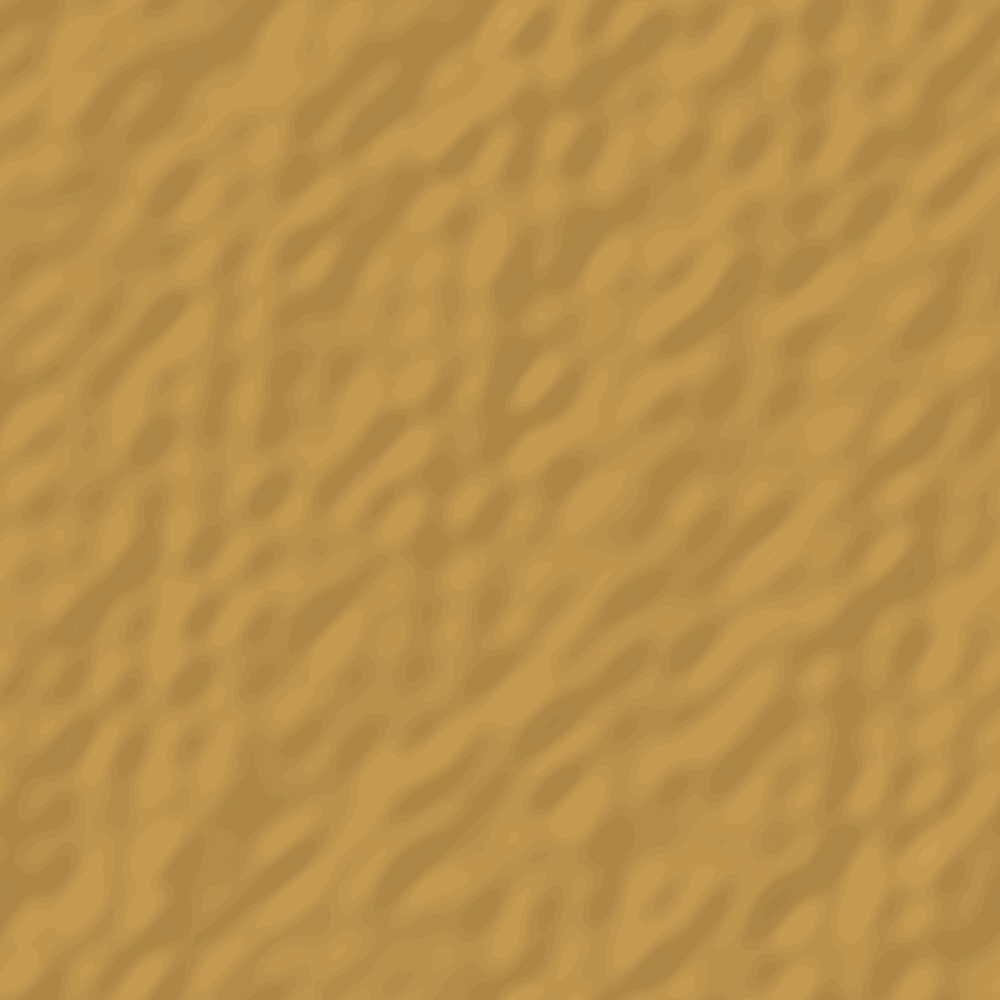
nm_antique_gold_basecolor · MAT-01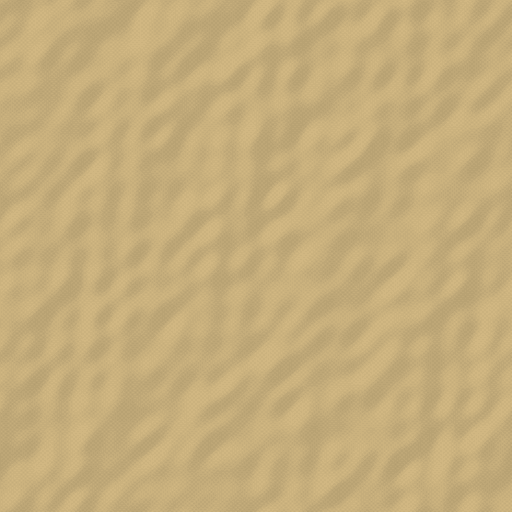
nm_paper_edge_basecolor · MAT-03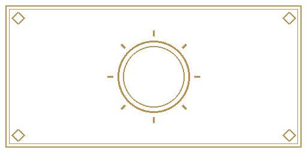
nm_zone_analysis · MAT-02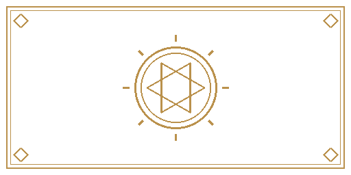
nm_zone_casting · MAT-02 nm_zone_words · MAT-02
nm_zone_words · MAT-02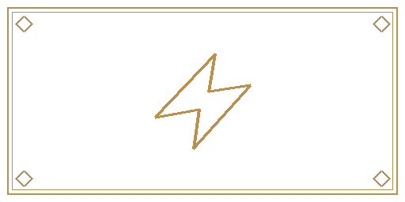
nm_zone_action · MAT-02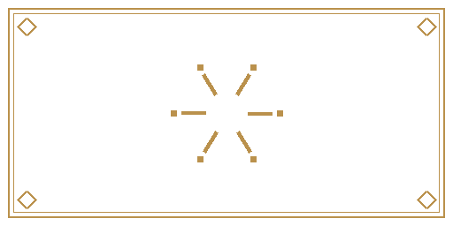
nm_zone_ash · MAT-02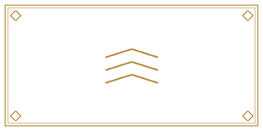
nm_zone_slot · MAT-02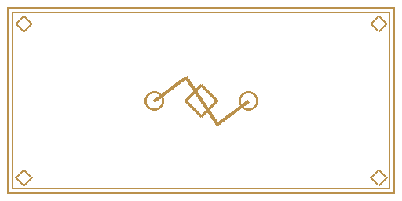
nm_zone_host_link · MAT-02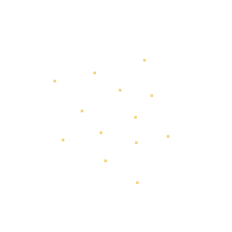
nm_fx_ambient_dust · VFX-01 nm_fx_ambient_runes · VFX-01
nm_fx_ambient_runes · VFX-01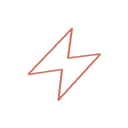
nm_fx_damage · VFX-04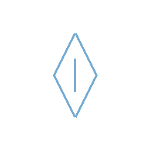
nm_fx_mana · VFX-04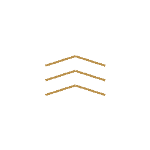
nm_fx_load · VFX-04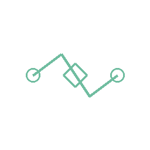
nm_fx_attach · VFX-05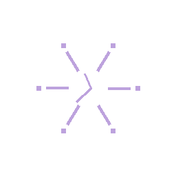
nm_fx_destroy · VFX-05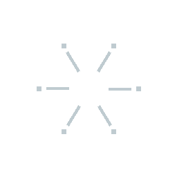
nm_fx_leave · VFX-05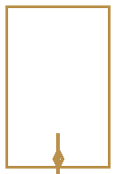
nm_interaction_selected · UI-02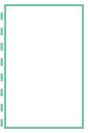
nm_interaction_candidate · UI-02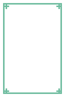
nm_interaction_target · UI-02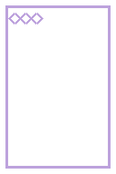
nm_interaction_cost · UI-02 nm_hud_phase · UI-01
nm_hud_phase · UI-01 nm_hud_detail · UI-01
nm_hud_detail · UI-01 nm_hud_chain · UI-01
nm_hud_chain · UI-01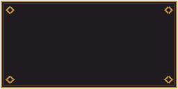
nm_hud_action · UI-01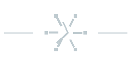
nm_result_lose · ANI-02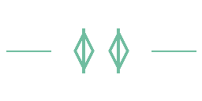
nm_result_draw · ANI-02